")
Construction - NPCs
The Estate Agent | The Sawmill Operator | The Stonemason | The Gardener
The Taxidermist | The Herald | The Servants
The Taxidermist | The Herald | The Servants
The Estate Agent
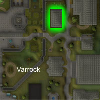
The exact location of the Estate Agent is shown to the right. He can sell you a house, magically redecorate it or move its location.
If you are stuck, he also provides a useful book to guide you through the processes.
For a cost, the Estate Agent can redecorate your house, depending on your Construction level.
| Style | Level required | Wall preview | Outside preview | Cost |
| Basic wood | 1 |
![[image]](../../img/main/kbase/skills/construction/styles/basicwood.jpg) |
![[image]](../../img/main/kbase/skills/construction/styles/grass.jpg) |
5,000gp |
| Basic stone | 10 |
![[image]](../../img/main/kbase/skills/construction/styles/basicstone.jpg) |
|
5,000gp |
| Whitewashed stone | 20 |
![[image]](../../img/main/kbase/skills/construction/styles/whitewashed.jpg) |
![[image]](../../img/main/kbase/skills/construction/styles/sand.jpg) |
7,500gp |
| Fremennik-style wood | 30 |
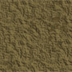 | 10,000gp | |
| Tropical wood | 40 |
![[image]](../../img/main/kbase/skills/construction/styles/decentwood.jpg) |
|
15,000gp |
| Fancy stone | 50 |
![[image]](../../img/main/kbase/skills/construction/styles/poshstone.jpg) |
|
25,000gp |
| Zenevivia's dark stone | 68 |
![[image]](../../img/main/kbase/skills/construction/styles/darkstone.jpg) |
|
Free |
Similar to the service provided in redecoration, when you reach a certain Construction level the Estate Agent can move your house if you wish.
| Location | Level required |
Cost | Location | Level required |
Cost | |

|
1 |
5,000gp | 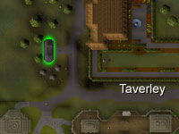 | 10 |
5,000gp | |

| 20 |
7,500gp | 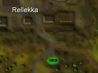 | 30 |
10,000gp | |
|
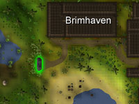
|
40 |
15,000gp | ![[image]](../../img/main/kbase/skills/construction/maps/yanille_portal.jpg) |
50 |
25,000gp |
The Sawmill Operator

The Sawmill Operator will sell useful items such as saws, cloth and nails. Most useful of all, he will turn logs into planks for a fixed price per log.
The Stonemason

All of these can be found by trading with the Stonemason, found in his house in Keldagrim on the south-west side.
The Gardener

You can use these trees in the same manner that you build furniture. Take a plant to a garden hotspot and build it there if you have the correct plant.
You will also need a watering can with water in it to help the plant settle into the new soil.
The Taxidermist

On occasions like this, you should take this head/fish and some coins to the Taxidermist in Canifis. She can preserve the head/fish, so you can mount it on your wall (given you have the correct Construction level).
When you have mounted the head in your skill hall, you can talk to it for a little bit of fun, or just to show your friends your accomplishments.
| Monster | Cost | Level to mount |
Stuffed image |
Monster | Cost | Level to mount |
Stuffed image |
|
| 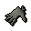 Crawling hand |
1000 | 38 |
![[image]](../../img/main/kbase/skills/construction/items/trophy/hand_stuffed1.gif) |
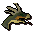 Cockatrice |
2000 | 38 |
![[image]](../../img/main/kbase/skills/construction/items/trophy/cockatrice_head_stuffed1.gif) |
|
![[image]](../../img/main/kbase/skills/construction/items/trophy/basilisk_head1.gif) Basilisk |
4000 | 38 |
![[image]](../../img/main/kbase/skills/construction/items/trophy/basilisk_head_stuffed1.gif) |
![[image]](../../img/main/kbase/skills/construction/items/trophy/kurask_head1.gif) Kurask |
6000 | 58 |
![[image]](../../img/main/kbase/skills/construction/items/trophy/kurask_head_stuffed1.gif) |
|
![[image]](../../img/main/kbase/skills/construction/items/trophy/abyssal_head.gif) Abyssal demon |
12000 | 58 |
![[image]](../../img/main/kbase/skills/construction/items/trophy/abyssal_head_stuffed.gif) |
![[image]](../../img/main/kbase/skills/construction/items/trophy/kbd_head.gif) King Black Dragon |
50000 | 78 |
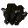 | |
| 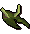 Kalphite Queen |
50000 | 78 |
![[image]](../../img/main/kbase/skills/construction/items/trophy/kq_head_stuffed2.gif) |
|||||
The Herald

The portraits and maps you can buy are based upon your quest achievements. For example, you cannot buy a map of Morytania if you have not completed certain quests in that area.
If you speak with the Herald, you will find out your family crest. If you do not want the one given, you can pay him to change it. The family crest you have chosen will appear around your house. It will be emblazoned on decorative shields, banners, helmets and decorations you make in your house.
| Map/painting | Cost | Requirements |
| 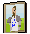 King Arthur portrait |
1000 | Holy Grail |
| 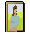 Elena portrait |
1000 | Plague City |
![[image]](../../img/main/kbase/skills/construction/items/hallquest/giantdwarf.gif) Giant Dwarf portrait |
1000 | The Giant Dwarf |
![[image]](../../img/main/kbase/skills/construction/items/hallquest/miscellanians.gif) Miscellanians portrait |
1000 | Throne of Miscellania |
![[image]](../../img/main/kbase/skills/construction/items/hallquest/lumbridge.gif) Lumbridge landscape |
2000 | Help Fred the Farmer with some sheep shearering Cook's Assistant Rune Mysteries Restless Ghosts |
![[image]](../../img/main/kbase/skills/construction/items/hallquest/desert.gif) Kharidian Desert landscape |
2000 | Prince Ali Rescue Tourist Trap The Feud The Golem |
| 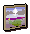 Morytania landscape |
2000 | Shades of Mort'ton Creature of Fenkenstrain Ghosts Ahoy Haunted Mine |
![[image]](../../img/main/kbase/skills/construction/items/hallquest/karamja.gif) Karamja landscape |
2000 | Pirate's Treasure Tai Bwo Wannai Trio Shilo Village |
![[image]](../../img/main/kbase/skills/construction/items/hallquest/istafar.gif) Isafdar landscape |
2000 | Roving Elves |
![[image]](../../img/main/kbase/skills/construction/items/hallquest/small_map.gif) Small map |
1000 | 51 Quest Points |
| 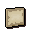 Medium map |
1000 | 101 Quest Points |
| 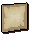 Large map |
1000 | 151 Quest Points |
The Servants
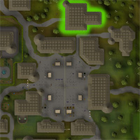
Different servants can do different tasks and make different things for you and your visitors. There is a more in-depth description of what servants can do here.

More articles in
Construction (Members Only)
|
|
|
Further Help
If this article does not help you, you may find the following sections of the RuneScape site helpful:
|
|